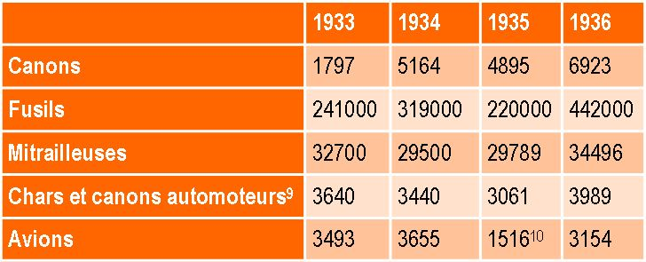

Le site Slate publie une forme de publicité éditoriale pour le livre d’Olivier Schmitt Pourquoi Poutine est notre allié? Anatomie d’une passion française (Hikari Éditions, 128 pages, 9,90 euros1). Ce livre, qui se veut un pamphlet (un de plus…) anti-Poutine. Compte tenu de l’orientation du site Slate on comprend que cela convient particulièrement bien à ce site. Ce livre reprend en fait les mensonges les plus éculés sur la politique soviétique et le début de la guerre de 1939-1945. Voyons un peu ce qui se cache derrière cette triste opération menée par de bien tristes sires…
L’OUBLI DE LA RESPONSABILITÉ POLONAISE
Olivier Schmitt écrit dans son livre : « Vladimir Poutine a brisé un tabou en défendant le pacte germano-soviétique d’août 1939, ou pacte Molotov-Ribbentrop, comme ayant été dans les intérêts de la Russie. Ce faisant, il signifie qu’il ne fallait pas résister à Hitler en 1939, puisque c’est ce que Staline a fait, et qu’il a eu raison de le faire2. » Le seul petit problème est que le « pacte » germano-soviétique ne peut être analysé en dehors de son contexte, c’est à dire les accords de Munich de 1938, ou la France et l’Angleterre ont cédés à Hitler, et le jeu dangereux (et mortel) mené par le gouvernement polonais depuis le début des années trente.
Ce dernier, tout en étant lié par un accord de coopération militaire avec la France, jouait directement le jeu de l’Allemagne et cela contre la « petite entente » qui constituait, à l’époque, le cœur de la politique française en Europe centrale, et qui était supposée jouer un rôle dissuasif par rapport à l’Allemagne. Il faut ici relire l’ouvrage clef de Vidal sur la coopération militaire entre la France et l’URSS dans les années 1920 et 19303. J’ai d’ailleurs rendu compte de cet ouvrage dans ce carnet4. Certains en étaient conscient, comme l’attaché militaire français à Moscou, le colonel Mendras, qui écrivait en octobre 1934 : « Mais, aujourd’hui l’élément décisif c’est l’attitude de la Pologne du fait de sa position géographique. Ses actuels dirigeants le savent bien et ils en jouent hardiment avec ce goût congénital de l’intrigue et des combinaisons à double fond, que leur passé de conspirateurs n’a pu que développer. Je doute que jamais nous puissions compter sur eux5 » . Dans les années 1934-1939, les dirigeants polonais adoptèrent une politique véritablement suicidaire vis-à-vis de l’Allemagne, allant jusqu’à soutenir Hitler dans son projet de démembrement de la Tchécoslovaquie. Ceci devait se solder par l’alliance entre la Pologne et l’Allemagne pour achever ce démembrement, en mars 1939.
Cependant, la décision politique avait été prise, et cela apparaît comme définitivement en 1935, de centrer la politique de défense de la France à l’est de l’Allemagne sur la Pologne6. La justification de cette politique se voulait géographique. L’URSS de l’époque n’ayant pas de frontière commune à l’époque avec l’Allemagne. Mais, en cantonnant le rôle de l’URSS à celui, au mieux, de « neutralité bienveillante », voire en oubliant tout simplement son rôle potentiel dans l’équilibre des forces européennes, l’armée française, sous l’influence de Pétain, prend une trajectoire aux conséquences dramatiques qu’elle paiera au prix fort en mai 1940.
Addendum au pacte germano-soviétique de non-agression du 23 août 1939 (signé par les ministres des Affaires étrangères des deux pays, Joachima von Ribbentropa et Viatcheslav Molotov) indiquant la ligne de démarcation des terres polonaise entre les deux pays. On peut voir sur le document la signature de Joseph Staline et du ministre Ribbentrop.
MUNICH, ET LA VÉRITABLE CAPITULATION DEVANT HITLER
La question des accords de Munich est, elle aussi, bien connue. Elle a suscité de nombreux ouvrages portant sur l’état d’esprit de la société française en 19387. Dans les semaines qui précèdent cette véritable capitulation des puissances démocratiques face à l’Allemagne nazie, le problème se pose de savoir avec qui on entrera en guerre si la guerre doit être déclarée pour garantir l’intégrité de la Tchécoslovaquie. On peut discuter longuement si la France et la Grande-Bretagne avaient réellement besoin de ces accords. On sait aujourd’hui toute la dimension du bluff d’Hitler dont l’aviation n’est nullement prête, même si elle aligne des matériels plus modernes que ceux des britanniques et des français8. Les manœuvres de début septembre 1938 se solderont d’ailleurs par un taux incroyable d’accidents. Il ne faut pas non plus sous-estimer l’aide que l’Union soviétique était prête à apporter, en particulier par la livraison d’avions modernes (I-16) à la France.
Ceci pose la question de la puissance réelle de l’Armée Rouge. Elle était en proie aux purges meurtrières déclenchées par Staline. Mais, son niveau d’équipement n’en restait pas moins significatif, et en comparaison de celui de l’Allemagne et de celui de la France.
Tableau 1 - Productions d’armes par catégorie en URSS dans le 2ème Plan quinquennal

Source : Samuelson L., Plans for Stalin’s War Mchine – Tukhachevskii and Military-Economic Planning, 1926-1941, Macmillan, Basingstoke, 2000 ; tableau 7.8., p. 182.
Il est intéressant de noter cependant qu’une certaine sous-estimation des capacités de l’Armée Rouge en France est venue non pas d’un filtre « idéologique » mais du filtre « doctrinal » des militaires français. Ainsi, le rôle potentiel des grandes unités blindées, des unités parachutistes, est-il minoré car des unités de ce type ne peuvent trouver leur place dans la doctrine militaire française de l’époque, largement inspirée par Pétain. Inversement, les militaires français plus novateurs (comme le général Loizeau ou le colonel de Gaulle) apprécient plus justement ce potentiel, en raison de leurs options doctrinales qui sont convergentes avec celles des soviétiques11.
Il n’en reste pas moins que confronté à l’opposition absolue du gouvernement polonais d’accepter le transit de troupes soviétiques sur son territoire, les gouvernements Français et Britanniques ont cédé à Hitler. C’est un fait, et il est majeur. Quels que soient les défauts que l’on peut trouver au régime soviétique sous Staline, et ils sont nombreux, la responsabilité de l’accord de Munich pèse entièrement sur Daladier et Chamberlain.
AVEUGLEMENT IDÉOLOGIQUE
Comment dès lors peut-on ignorer ces deux faits, Munich mais aussi la stupidité du gouvernement polonais (et son aveuglement) qui il s’allie avec l’Allemagne pour achever le dépeçage de la Tchécoslovaquie restante en mars 1939, quand on cherche à comprendre le « pacte » germano-soviétique ? Les accords de Munich ont convaincu Staline, dont la paranoïa suspicieuse était déjà naturellement en éveil, que les français et les britanniques ne voulaient pas la guerre contre Hitler.
En Grande-Bretagne, seul Winston Churchill eut des mots forts et prémonitoires sur la guerre à venir12.
Ceci éclaire le pacte Germano-Soviétique d’août 1939. De ce pacte, une partie est pleinement justifiée. Comprenant que les britanniques et les français ne sont pas fiables, Staline cherche à mettre l’URSS hors de danger. Une autre partie témoigne cependant des tendances impérialistes de Staline. C’est celle où il négocie en secret avec Hitler l’annexion des Pays Baltes et d’une partie de la Pologne et surtout où il fait sa politique à l’égard des Etats Baltes et son agression contre la Finlande. La question qu’il faut cependant poser est de savoir jusqu’à quel point cette dimension « impérialiste » du « pacte » est réellement séparable de la dimension qui, elle, est induite par une analyse de la situation et de son contexte et qui se trouve être justifiée.
Dans tous les cas cependant on voit quel l’on ne peut déduire du « pacte » une quelconque « alliance » entre Hitler et Staline.
Ce serait allé bien trop vite en besogne. Les troupes soviétiques qui entrent en Pologne le 17 septembre 1939 ont ordre, si les troupes allemandes ne respectent pas leur « zone d’occupation » de les « balayer ». En fait, Staline sait qu’une guerre avec l’Allemagne nazie est inévitable et il cherche à ce que cette guerre ait lieu dans les meilleures conditions possibles pour l’URSS. Il espère simplement en retarder le déclenchement le plus longtemps possible pour laisser l’Allemagne s’affaiblir le plus possible dans la guerre « à l’ouest ». Il ne peut imaginer l’effondrement de la France en mai-juin 1940. Quand celui-ci survient, il en comprend les conséquences stratégiques13.
L’interruption du programme naval du 3ème plan quinquennal en septembre 1940, une décision qui a sans doute été prise dès la fin du mois de juillet 1940, et le transfert de l’acier vers la construction de chars supplémentaires, est bien la preuve que Staline sait un affrontement inévitable. En janvier 1941 se tinrent deux « jeux de guerre » (Kriegspiel) au Kremlin, le premier du 2 au 6 janvier et le second du 7 au 14 janvier14. Le premier fut un jeu défensif dans lequel les forces soviétiques furent confiées au maréchal Pavlov et les forces allemandes (ou « bleues » dans la terminologie soviétique) au général G.K. Zhukov. Ce dernier, le seul général soviétique à avoir l’expérience de la guerre mécanisée à la suite de sa victoire contre les japonais à Khalkhin-Ghôl en août 193915, encercla les forces soviétiques et déboucha vers l’Est rapidement. Les cartes de ce premier « jeu » sont intéressantes car elles se révèlent très proches de la manœuvre faite dans la réalité par les forces allemandes. Notons déjà que, si Staline avait réellement cru en la parole d’Hitler, on ne voit pas la nécessité de ce « jeu », tenu sur son ordre, et sous sa présence, au Kremlin. Le second « jeu» avait pour but de tester une contre-offensive et vit les adversaires de hier échanger leurs camps respectifs. Zhukov, à la tête désormais des forces soviétiques non seulement stoppa l’avancée allemande mais mena une contre-offensive qui devait le mener aux portes de la Roumanie et de la Hongrie. Un troisième « jeu » se tint toujours au Kremlin au début de février 1941. Ce nouveau « jeu » testa une offensive allemande qui serait lancée depuis la région de Bobrouïsk vers Smolensk et l’important « pont de terre » entre la Dvina et le Dniepr qui commande l’accès à Moscou. Il implique donc que Staline s’était résolu à l’idée d’une pénétration en profondeur des armées allemandes sur le territoire de l’URSS. Dans ce « jeu », Zhukov appliqua une défense échelonnée pour épuiser d’abord le potentiel des divisions blindées allemandes, puis passa à une contre-offensive à partir des deux ailes. Ceci correspond au scénario qui sera appliqué à Koursk en juillet 1943. Ce « jeu » démontra la supériorité d’une bataille d’arrêt, suivie d’une contre-offensive, sur une offensive préemptive. Il démontre qu’à cette date on ne peut plus douter du sérieux avec lequel la possibilité d’une attaque allemande était envisagée.
Mais Staline est resté persuadé que la guerre n’éclatera pas avant 1942 ou 1943, en quoi il se trompe gravement. Dans l’atmosphère de terreur et de suspicion qui règne au Kremlin, cela suffit à discréditer les informations qui remontent dès mars-avril 1941 sur les préparatifs allemands. L’Armée Rouge était au milieu de ce que l’historien militaire américain David Glantz a appelé une « crise institutionnelle16, à laquelle vint s’ajouter lors de l’attaque la perte des transmissions avec les échelons avancés. Ce fut, en effet, l’une des principales raisons de la confusion qui régna dans les premiers jours de l’attaque à Moscou. Ajoutons cependant que Staline acquiesça aux demandes de Zhukov du mois d’avril et de mai 194117, à l’exception de la mise en alerte des districts frontaliers jugée comme pouvant apparaître comme une « provocation » par les Allemands. Ceci est parfaitement contradictoire avec le mythe selon lequel Staline aurait cru jusque aux dernières heures en la parole d’Hitler.
Olivier Schmitt reprend donc à son compte les mythes les plus éculés sur l’origine de la seconde guerre mondiale. En cela, il fait œuvre d’idéologue et de petite main de la grande hystérie antirusse qui règne aujourd’hui en France, mais nullement de scientifique ou d’analyste des relations internationales.
3. Vidal G., Une alliance improbable – L’armée française et la Russie soviétique 1917-1939, Rennes, Presses Universitaires de Rennes, coll. « Histoire », 307p.
5. Voir Vidal G., Une alliance improbable – L’armée française et la Russie soviétique 1917-1939, op.cit., p. 219.
6. Voir, idem, pp. 223-224.
7. Winock M., N. Benkorich, La Trahison de Munich : Emmanuel Mounier et la grande débâcle des intellectuels, CNRS éditions, 2008.
8. Cuny J. et Danel R., L’aviation de chasse française 1918-1940, Paris, éditions Larivière, 1974, pp. 142 et ssq..
9. Les chars soviétiques de l’époque sont de bonne qualité et incluent des chars légers (T-26) des chars rapides (BT-2, BT-5 et BT-7) dont l’armement et les qualités manœuvrières sont sans égal, des chars moyens et lourds (T-28, T-35).
10. La chute de la production est liée à l’introduction de nouveaux modèles plus performants comme les chasseurs I-15, I-16 ou le bombardier SB-2.
11. Sapir J., « Les origines soviétiques du concept de révolution dans les affaires militaires » in L’Armement , NS, n°51, mars 1996, pp. 143-150 ; voir aussi : « L’histoire militaire comme instrument de légitimation dans la pensée militaire soviétique », in Cahiers du Centre d’Études d’Histoire de la Défense, n°16, pp. 38-56.
12. « They had to choose between war and dishonor. They chose dishonor; they will have war. » Hyde, Harlow A. (1988). Scraps of paper: the disarmament treaties between the world wars., Londres, Media Publishing & Marketing, page 307.
13. Sapir J., « La défaite française de 1940 vue par les soviétiques » in Cahiers du CEHD, n°23, « Nouvelle histoire bataille (II) », pp. 273-281, 2004.
14. Fulgate B. et L. Dvoretsky, Thunder on the Dnepr, Presidio Press, 1997, 2001
15. Sapir J., La Mandchourie Oubliée – Grandeur et démesure de l’Art de la Guerre soviétique, Éditions du Rocher, Paris-Monaco, mai 1996 (republié chez le même éditeur en 2016) ; voir aussi Coox A.D., Nomonhan – Japan against Russia, 1939, Stanford, Standford University Press, 1985, 1153 p.
16. Glantz, Before Stalingrad: Barbarossa, Hitler’s Invasion of Russia 1941, Tempus, 2003.
17. En particulier le rappel de 800 000 réservistes et le transfert de 4 armées des districts militaires de l’intérieur du pays vers les frontières occidentales. Voir Général S.P. Ivanov (ed.) Nachal’nyj Period Vojny, [La période initiale de la guerre] – Moscou, Voenizdat, 1974, chap.8

Partager cette page